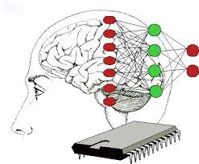

Propiedad que tiene un sistema de mantenerse constantemente en
funcionamiento. Para ello utiliza un mecanismo de mantenimiento que asegure que los
distintos subsistemas están balanceados y que el sistema total se mantiene en equilibrio
con su medio.

Constructos diseñados por un observador que persigue identificar y mensurar
relaciones sistémicas complejas. Todo sistema real tiene la posibilidad de ser
representado en más de un modelo. La decisión, en este punto, depende tanto de los
objetivos del modelador como de su capacidad para distinguir las relaciones relevantes
con relación a tales objetivos. La esencia de la modelística sistémica es la
simplificación. El metamodelo sistémico más conocido es el esquema input-output.

Se trata de procesos que apuntan al desarrollo, crecimiento o cambio en
la forma, estructura y estado del sistema. Ejemplo de ello son los procesos de
diferenciación, la especialización, el aprendizaje y otros. Los sistemas complejos
(humanos, sociales y culturales) se caracterizan por sus capacidades para elaborar o
modificar sus formas con el objeto de conservarse viables. En términos cibernéticos, los
procesos causales mutuos que aumentan la desviación son denominados
morfogenéticos. Estos procesos activan y potencian la posibilidad de adaptación de los
sistemas a ambientes en cambio.